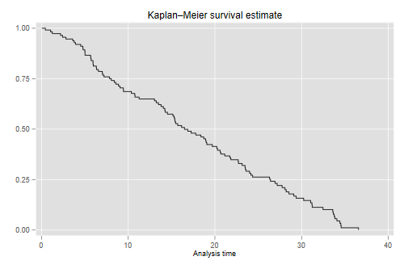
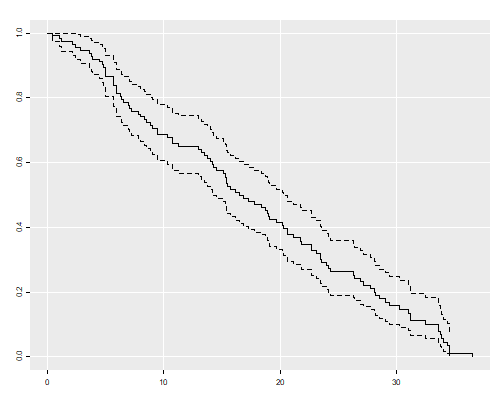
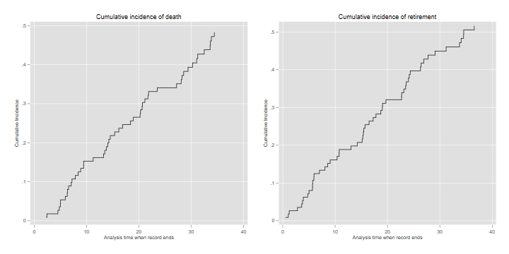
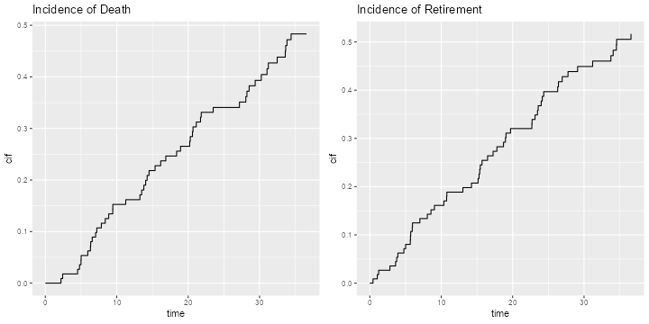
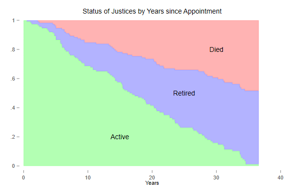
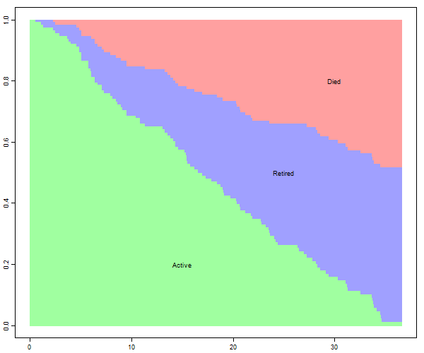

<h2 id="survival-with-competing-risks">Survival with Competing
Risks</h2>
<p>Singer and Willet (2003) <em>Applied Longitudinal Data Analysis</em>,
Oxford, analyze data on the length of service of U.S. Supreme Court
Justices, treating death and retirement as competing risks, and age at
appointment and calendar year of appointment as predictors.</p>
<p>To conduct a similar analysis I extracted data from Wikipedia and the
Supreme Court website, and prepared a comma-separated-value file with
the justice number, name, and strings representing the dates of birth,
the dates tenure starts and stops, and a status variable that takes the
values Incumbent, Died, Resigned or Retired. I ignore the return
engagements of John Rutledge and Charles Evans Hughes, who resigned and
later were reappointed as Chief Justice.</p>
<p>The file is available on this website as <code>justices.csv</code>
and can be read as shown in the Stata and R logs. All dates include the
day, month and year. The date of birth of James Moore Wayne was
available as year only in both sources, so I set the month and day to
July 1. All other dates were complete. (An earlier version of this
dataset recorded all dates using years only, for simplicity and
consistency with the reference. That version is available in Stata 11
format as <code>justices.dta</code>. It was last updated in 2016.)</p>
<p>We start by reading the data and converting the dates from strings to
the native date format in your statistical package. Note that
<code>stopstr</code> is empty for incumbents. We set it to February 22,
2018 for these cases, effectively censoring the data as of the date this
analysis was run. I calculate <code>tenure</code> in years dividing by
365.25. The <code>event</code> indicator is coded 0 for current
Justices, 1 for those who died while serving, and 2 for those who
resigned or retired. I also compute <code>age</code> at appointment and
<code>year</code> of appointment, and save the dataset for later
use.</p>

{% include srtabs.html %}

<pre class='stata'>. import delimited using https://grodri.github.io/datasets/justices.csv, clear
(encoding automatically selected: ISO-8859-1)
(7 vars, 113 obs)

. gen birth = date(birthstr, "MDY")

. gen start = date(startstr, "MDY")

. replace stopstr = "February 22, 2018" if stopstr == ""
(9 real changes made)

. gen stop = date(stopstr, "MDY")

. gen tenure = (stop - start)/365.25

. gen event = (status == "Died") + /// 
>     2*(status == "Resigned" | status == "Retired")

. gen age = (start - birth)/365.25

. gen year = year(start) + (doy(start)-1)/doy(mdy(12,31,year(start)))

. drop *str

. save justices2, replace
file justices2.dta saved
</pre>
<pre class='r'>> justices &lt;- read.csv("https://grodri.github.io/datasets/justices.csv", 
+     stringsAsFactors = FALSE)
> table(justices$status)

     Died Incumbent  Resigned   Retired 
       50         9        17        37 
> library(dplyr)
> library(lubridate)
> map &lt;- data.frame(code=c(0,1,2,2))
> row.names(map) &lt;- c("Incumbent","Died","Resigned","Retired")
> justices &lt;- mutate(justices, 
+     birth = mdy(birthstr),
+     start = mdy(startstr), 
+     stop  = mdy(ifelse(stopstr=="", "February 22, 2018", stopstr)),
+     tenure = (stop - start)/365.25,
+     event = map[status,],
+     age  = (start - birth)/365.25,
+     year = year(start) + 
+         (yday(start)-1)/ifelse(leap_year(year(start)),366,365)) |> 
+ select(-ends_with("str"))
> write.csv(justices, file = "justices2.csv")
</pre>
<h3 id="overall-survival">Overall Survival</h3>
<p>The first thing we calculate is the Kaplan-Meier estimator of overall
survival</p>
<pre class='stata'>. stset tenure, fail(event) // event > 0

Survival-time data settings

         Failure event: event!=0 &amp; event&lt;.
Observed time interval: (0, tenure]
     Exit on or before: failure

──────────────────────────────────────────────────────────────────────────
        113  total observations
          0  exclusions
──────────────────────────────────────────────────────────────────────────
        113  observations remaining, representing
        104  failures in single-record/single-failure data
  1,887.365  total analysis time at risk and under observation
                                                At risk from t =         0
                                     Earliest observed entry t =         0
                                          Last observed exit t =  36.57221

. sts graph

        Failure _d: event
  Analysis time _t: tenure

. graph export justices-km.png, width(500) replace
file justices-km.png saved as PNG format

. sts gen km = s // save for later use

. list _t km if abs(km - 0.5) &lt; 0.01

     ┌───────────────────────┐
     │        _t          km │
     ├───────────────────────┤
 15. │ 16.156057   .50834001 │
 89. │ 16.490076    .4989263 │
     └───────────────────────┘
</pre>
<pre class='r'>> library(survival)
> km &lt;- survfit(Surv(tenure, event > 0) ~ 1, data=justices)
> km
Call: survfit(formula = Surv(tenure, event > 0) ~ 1, data = justices)

       n events median 0.95LCL 0.95UCL
[1,] 113    104   16.5    14.3    20.3
> source("ggfy.R.txt")
> png("justices-kmr.png", width=500, height=400)
> ggfy(km)
> dev.off()
null device 
          1 
</pre>
<p> </p>
<p>The median length of tenure in the court is 16.5 years.</p>
<h3 id="incidence-functions">Incidence Functions</h3>
<p><span class="stata">We will use the command <code>stcompet</code>,
written by V. Coviello and M. Boggess (2004) “Cumulative incidence
estimation in the presence of competing risks” <em>Stata Journal</em>,
4(2):103-112, to estimate incidence functions. We specify death as the
event of interest and retirement as the competing event.</span> <span
class="r">We will use the function <code>cuminc()</code> in Bob Grays’s
<code>cmprsk</code> package to estimate cumulative incidence
functions.</span></p>
<pre class='stata'>. streset, fail(event == 1)
-> stset tenure, failure(event==1)

Survival-time data settings

         Failure event: event==1
Observed time interval: (0, tenure]
     Exit on or before: failure

──────────────────────────────────────────────────────────────────────────
        113  total observations
          0  exclusions
──────────────────────────────────────────────────────────────────────────
        113  observations remaining, representing
         50  failures in single-record/single-failure data
  1,887.365  total analysis time at risk and under observation
                                                At risk from t =         0
                                     Earliest observed entry t =         0
                                          Last observed exit t =  36.57221

. stcompet ci = ci, compet(2) // you just specify the code
</pre>
<pre class='r'>> library(cmprsk)   
> cif &lt;- cuminc(justices$tenure, justices$event)
> cifd &lt;- data.frame(       
+     cause = factor(rep(c("death","retirement"),
+             c(length(cif[[1]]$time), length(cif[[2]]$time)))),
+     time  = c(cif[[1]]$time, cif[[2]]$time),
+     cif   = c(cif[[1]]$est,  cif[[2]]$est)) 
</pre>
<p>The code generates the cumulative incidence functions CIF for each
competing cause. <span class="stata">To plot them you need to select the
appropriate event code.</span> <span class="r">I stacked them into a
data frame suitable for use with <code>ggplot()</code></span>. Here’s
the incidence of death and retirement</p>
<pre class='stata'>. twoway line ci _t if event==1, c(J) sort ///
>     title(Cumulative incidence of death) name(d, replace)

. twoway line ci _t if event==2 &amp; _t > 0, c(J) sort ///
>     title(Cumulative incidence of retirement) name(r, replace)

. graph combine d r, xsize(6) ysize(3)

. graph export justices-cif.png, width(720) height(360) replace 
file justices-cif.png saved as PNG format
</pre>
<pre class='r'>> library(ggplot2)
> g1 &lt;- ggplot(filter(cifd, cause=="death"), aes(time, cif)) + 
+     geom_step() + ggtitle("Incidence of Death")
> g2 &lt;- ggplot(filter(cifd, cause=="retirement"), aes(time, cif)) +     
+     geom_step() + ggtitle("Incidence of Retirement")
> library(gridExtra)
> g &lt;- arrangeGrob(g1, g2, ncol=2); #plot(g)
> ggsave(plot = g, "justices-cifr.png", width = 10, height = 5, dpi = 72)
</pre>
<p> </p>
<h3 id="the-status-plot">The Status Plot</h3>
<p>We now build a nice plot that combines the Kaplan-Meier estimate of
overall attrition with the cumulative incidence functions showing
atrition by cause. This takes a bit of work, but I think the result is
worth the effort.</p>
<p>We use the fact that the survival and incidence functions add up to
one, <em>S(t) + I1(t) + I2(t) = 1</em>, so the areas in the plot have
boundaries <em>1, 1 - I1(t), S(t)</em> and <em>0</em>. The survival can
be obtained from Kaplan-Meier or as the complement of the sum of the
incidence functions.</p>
<p><span class="stata">In Stata we start by extracting the CIF for
death, and fill in the times for other types of events, which are coded
as missing. We also add a dummy observation so the plot actually starts
at time 0.</span></p>
<pre class='stata'>. sort _t

. gen cid = ci if event==1
(63 missing values generated)

. replace cid = cid[_n-1] if missing(cid)
(59 real changes made)

. replace cid = 0 if missing(cid)
(4 real changes made)

. expand 2 in -1 // new observation is at the end
(1 observation created)

. replace _d = . in -1
(1 real change made, 1 to missing)

. replace _t = 0 in -1
(1 real change made)

. replace km = 1 in -1
(1 real change made)

. replace cid = 0 in -1
(1 real change made)

. // We can now compute the boundaries and plot them
. gen b1 = 1

. gen b2 = 1 - cid

. gen b3 = km

. gen b4 = 0

. sort _t    

. twoway rarea b1 b2 _t, color("255 160 160") c(J) ///
> ||  rarea b2 b3 _t, color("160 160 255") c(J) ///
> ||  rarea b3 b4 _t, color("160 255 160") c(J) ///
> , legend(off)  xtitle(Years) text(.2 15 "Active") ///
>   text(.5 25 "Retired") text(.8 30 "Died") ///
>   title("Status of Justices by Years since Appointment") ///
>   plotregion(color(white)) graphregion(color(white))

. graph export justices-status.png, width(600) replace 
file justices-status.png saved as PNG format

. drop in 1 //remove dummmy
(1 observation deleted)
</pre>
<p><span class="r">In R we have to deal with the fact that
<code>survfit()</code> and <code>cuminc()</code> arrange their results
differently, and that the times do not line up. My solution merges the
estimates and uses a simple function to fill the gaps. For the plot
itself I found it easier to draw the areas using
<code>polygon()</code>.</span></p>
<pre class='r'>> # align times and fill gaps
> death &lt;- filter(cifd, cause=="death"); 
> retirement &lt;- filter(cifd, cause=="retirement")
> dr &lt;- full_join(death, retirement, by = "time") |>
+     select(time, death=3, retirement=5) |> arrange(time)
> fg &lt;- function(x) {
+     for(i in 2:length(x)){ 
+         if(is.na(x[i])) x[i] &lt;- x[i-1]
+     } 
+     x
+ }
> dr &lt;- mutate(dr, death = fg(death), retirement = fg(retirement))
>  
> # draw the graph using overlapping polygons
> png("justices-statusr.png", width=600, height=500)
> par(mar=c(2,2,1,1), mgp=c(2 ,.7, 0), tck=-.01, cex=0.75)
> tmax = max(dr$time)
> plot(c(0, tmax), c(0,1), type="n", xlab="time", ylab="survival")
> polygon(c(0,tmax,tmax,0), c(0,0,1,1), 
+     col="#FFA0A0", border="#FFA0A0")
> text(30, .8, "Died")
> polygon(c(dr$time,tmax,0),c(1 - dr$death, 0, 0), 
+     col = "#A0A0FF", border = "#A0A0FF")
> text(25, .5, "Retired")
> polygon(c(dr$time,tmax,0),c(1 - dr$death - dr$retirement, 0, 0), 
+     col="#A0FFA0", border ="#A0FFA0")
> text(15, .2, "Active")
> dev.off()     
pdf 
  2 
</pre>
<p> </p>
<p>The green area is the survival function, showing the probability of
remaining in the court, and the other two areas partition attrition into
death and retirement, based on the incidence functions. In the long run
death and retirement are approximately equally likely.</p>
